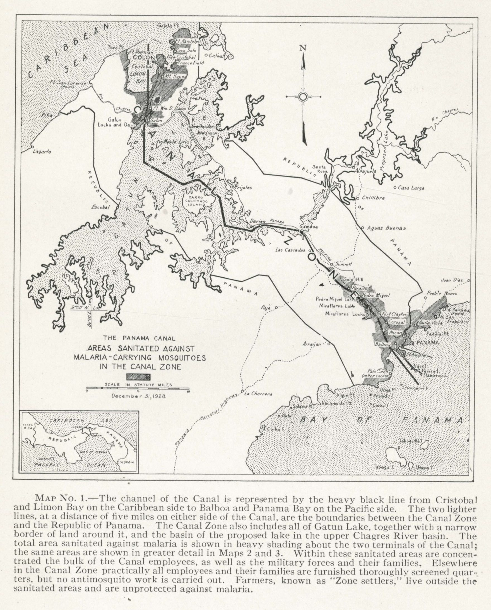

Dr. William Gorgas transformed the Canal Zone into one of the cleanest regions in the tropics. By draining swamps, fumigating homes, and eliminating mosquito breeding grounds, his public health programs eradicated yellow fever and malaria—saving thousands of lives.
